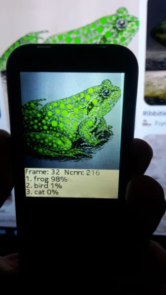
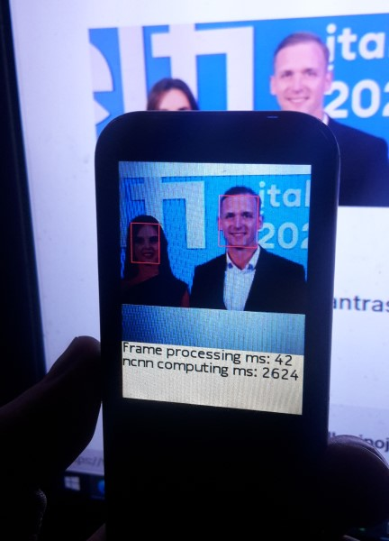

NCNN network demonstration on MRE platform mobile phones, including Nokia S30+ devices. For use on Nokia mobile phones, the application must be signed using the IMSI code of your SIM card. More information is available at: https://vxpatch.luxferre.top "ncnnVxp.vxp" "ncnnVxp1.vxp".

